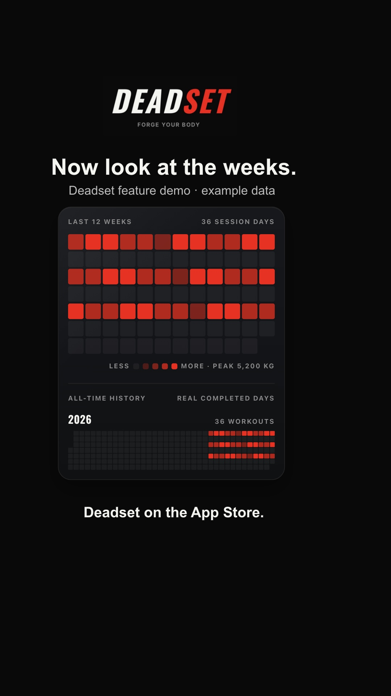

Two-slide format draft. Actual Deadset heatmap component with clearly labelled example data. Not uploaded or posted.

Every completed session has a place in your training history. See it in Deadset. Deadset on the App Store.